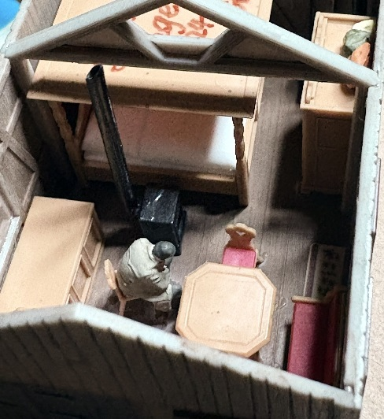
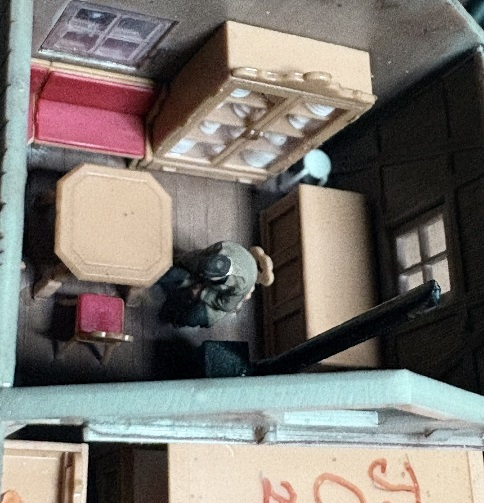
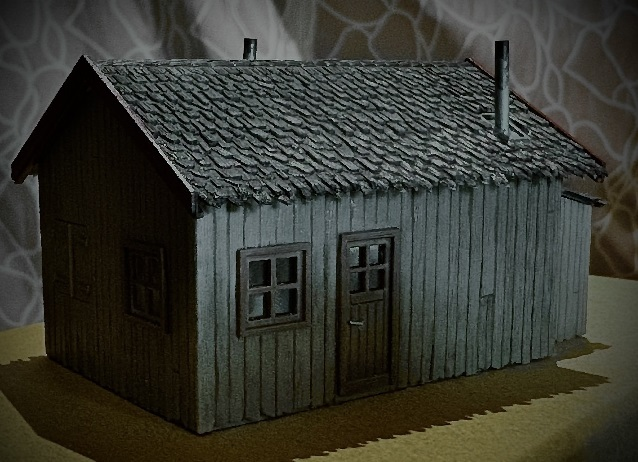

The dark forest is going to swallow everything...
Pete Lindow was set there with his pen in his hand. He wrote something down on a piece of parchment. He was about to build an axiom, an axiom from his recognition about survival.

He recalled back, admittedly, he had a pretty good family with a beauty wife and an adobe from the beginning.
He was the heir of a wealth clan, that granted him a rich pocket. He married his wife just as he became a man when he sooner left his parents.
He started a business then with not an ambitious mind to sell some goods. This was the time when he made his debut in the market of the town of that period.
Obviously, he was not the only person that sold such goods as his. He met a bull market soon that he was considering to expand his business till roads were paved from other towns to his own town.
Merchants were swarmed like afflux bringing his business myriads of difficulties.
People were distinguished to think than he was. Selling became a heavy duty since seldom people came to buy his.
He had to keep his business. Then he became a little bit paranoid. He always thought that his barn was stolen by a thief. During that time, he frequently went to his barn to count his goods one after another. Every time he finished counting, something must be missed out.
He swore he got caught that thief. So, he found a spot in the dark forest nearby his barn thinking to watch who got into this barn without his permission.
It was not until he found his wife's disloyalty that she was meddling with his neighbor that he reckoned his neighbor's son as the thief.
He was frustrated, extremely. He picked up his pen and sat in front of the window with lament and a long sigh to build his axiom of destiny. Outside the window, wolves were howling in the black silhouette of those trees in the dark forest. It was just a few minutes passed from sunset.

His neighbor's son flashed outside the window as though to make Pete stamped and sprang up from his chair and got out of the door of his house. He yelled "Hey, John Cesar! It is time for us to liquidate it!" and chasing this shadow in to the dark forest unrepentantly and eventually set him in the quagmire and moss.
He was hit on his head and got stabbed by someone from nowhere he couldn't know. It was dark. Things happened in such a second, he didn't have time to make his reminiscence till he tumbled into a swamp and got choked by mud and silt.
When sinking, he though with a conviction that "Theoretically, the dark forest law is common sense. sense. sense..."
And, ladies and gentlemen, this was the true story behind the Lindow Man II of the peat bog from the museum.

Steven Johnson Kim wrote on Nov 23rd 2026.